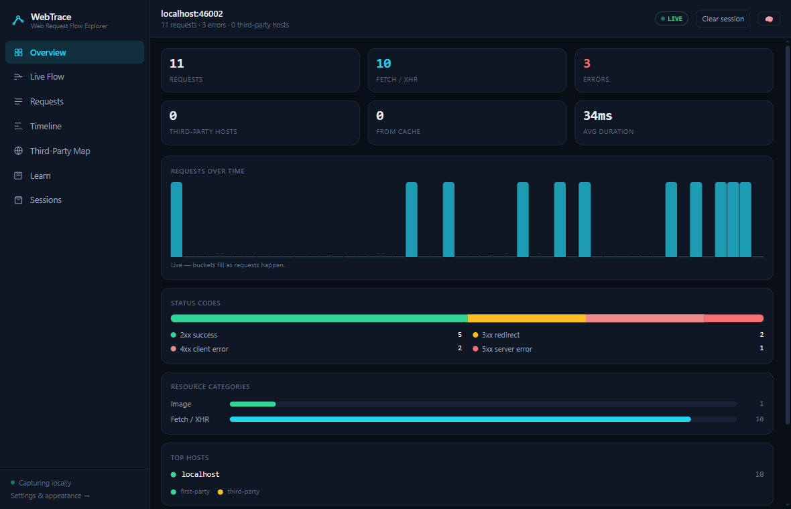
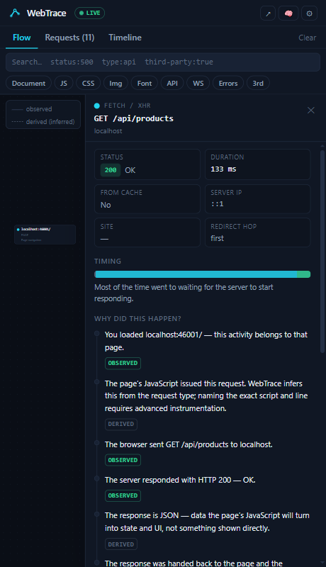
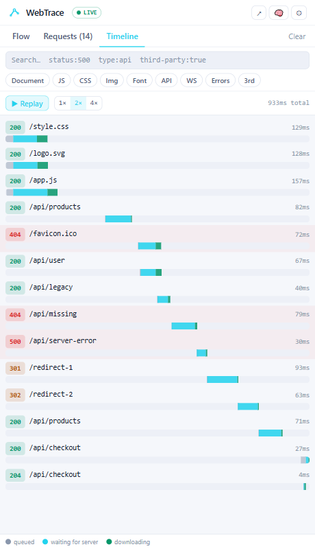

WebTrace turns your browser's network activity into an interactive, explainable story — what happened, why it happened, who started it, and what came next.

The idea
A network log is a list of facts. Understanding is the story between them.
GET /api/products 200 124ms 42 KB GET /api/user 200 89ms 12 KB GET /api/missing 404 31ms 1 KB
The page loaded → app.js executed →
fetch("/api/products") → 200 OK → JSON
fed into state → UI updated.
/api/missing failed: nothing exists at
that URL — wrong route or removed file.
Features
Every fact WebTrace shows is labeled OBSERVED (the browser reported it) or DERIVED (WebTrace inferred it). It never pretends to see more than it can.
An interactive graph that builds itself as a page loads — documents, scripts, styles, APIs, redirects and CORS preflights, connected by honest edges.
“Why did this happen?” answers for redirects, 401s, 404s, CORS failures, cache revalidation and network errors — step by step, evidence-tagged.
A waterfall with queued / waiting / download phases — replay a page load at 1×, 2× or 4× and watch requests unfold in order.
See every host your page talks to, grouped first-party vs third-party — request counts, error rates, when each one first appeared.
Eight lessons with quizzes — page loads, HTTP, caching, CORS, DNS/TLS, third parties — that run against the live traffic in front of you.
A complete dashboard beside the side panel: overview charts, request explorer, stored sessions to replay, and privacy controls you can actually read.
Architecture
The brain is pure TypeScript, fully unit-tested and browser-agnostic — the extension is just pipes and paint.
Chrome webRequest ──┐
├─► normalize + redact ─► TraceEvent stream
Chrome webNavigation ─┘ │
▼
SessionManager (per tab, in the background)
· correlator → request records & navigation roots
· batched writes to local IndexedDB
· live broadcast to the UI
│
┌────────────────┴────────────────┐
▼ ▼
Side panel (compact) Dashboard (full page)
flow · requests · timeline overview · flow · requests
why-stories · learning timeline · 3rd-party map
learn · sessions (replay)
Learning Mode
Learning Mode overlays plain-language glossary tooltips on real traffic — and the dashboard's Learn tab turns the concepts into short lessons with quizzes that explain every answer.


Privacy
Not a policy — an architecture. Redaction happens at ingestion, before anything is stored or rendered.
Roadmap
Live Flow, request explorer, timeline replay, explain stories, learning curriculum, dashboard, local-first storage.
Opt-in CDP mode: real initiator stacks (script + line), precise DNS/TLS timing, WebSocket frames.
Export to .webtrace.json and HTML reports, before/after comparison, regression detection.
@webtrace/node: optional local backend instrumentation — browser → API → controller → database, correlated by trace IDs. Still zero cloud.
Chrome Web Store + Edge Add-ons, docs site, Firefox port.